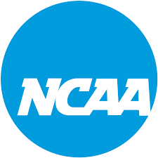

Photo by: unknown From: Stlsportsclinic.comNCAA is the collegiate sports league of the U.S. and it stands for National Collegiate Athletic Association which football, being the most popular one, I will be talking about it on this website. Football is a sport with an oval shaped ball and you are suposed to not let it touch the ground unless it is a kickoff, and if you let it touch the ground then that means that the play is over and it becomes the next down. You also get 4 downs to get 10 or more or less yards and if you don't then you turn the ball over where you are or you can punt it on 4th down or kick a field goal that will give you three points. You can also run the ball with a running back or do a play called a jet-sweep where a wide reciever can get motioned and they can get the ball pitched to them and also the quarterback can also run the ball and that is called scrambling. Their is something called a sack and that is when a defensive linemen or someone on the defense tackles the quarterback behind the line of scrimmage, and if the quarterback passes the line of scrimmage that is considered scrambling whci that means they can't pass the ball forward anymore until the next play and then if the quarterback gets tackled after passing the line of scrimmage then it is a normal tackle not a sack anymore. There are a couple positions that protect the quarterback that include: the center that hikes the ball, the left tack and right tackle are both right next to the center on opposite sides, and then the right and left guards they are on the opposite sides of eachother and are on the outside and all of them are called the O-line. Then on the defense there are positions like MLB,LOLB,and ROLB and those are linebackers and their job is to stop a run or watch short routes and stuff like that and those can be one of the most important positions in football. Then there are other positions like the CB, FS, and the SS, their job is to watch for deep passes and make sure that the wide recievers are not open so they don't get catches and stuff like that. Then their is the D-line, the D-line players are the main people that stop runs and sack and tackle the quarterback to stop the offense and those positions include the DE, DT, and sometimes the linebackers like the ROLB and the LOLB.
.jpeg)
The playoffs in the NCAA football league also called "CFB", is if you and another team in your conference (which a conference is an area with a bunch of teams and their are so many more college football conferences than NFL conferences) play against eachother in what is calleda conference championship. They then play against each other in this and whoever wins will be the #1 seed (which means the number one team the best team) in the conference. Then most of the time of you are top 12 best teams in the country and you win that then you might get invited to the college football playoffs. Which if both teams are really good then even if they lose they could make the playoffs but they could also if they don't get invited to the playoffs, then they can play in a bowl game which is just another normal game and you can play a couple of them a year if you don't make the playoffs. But then if you make the playoffs and you won the conference chamionship then you get to skip the first round of the playoffs, then you play in the qaurterfinals, then the semi-finals, and if you win both of those then you go to the national championship and that is like the super bowl, if you win you get a big trophy, a ring that shows that you and your team won that (everybody on the team gets a ring for it), and a huge celebration with a parade, and you and ypour team are the champions of that year the champions.
The top 3 teams in college football or NCAAF or CFB are usually Ohio state usually #1, Miami and Oregon because both of them are both undefeated right now and Oregon usually goes undefeated because the past two years they haven't lost a game unless it was the playoffs but I am going to give this to Oregon because they haven't lost a regular season game in like two years, Michigan and Texas both fight for #3 because they are both teams that every couple or every other year can be explosive but the team that is the best between them right now is Michigan because they are destroying and blowing out every team they play.